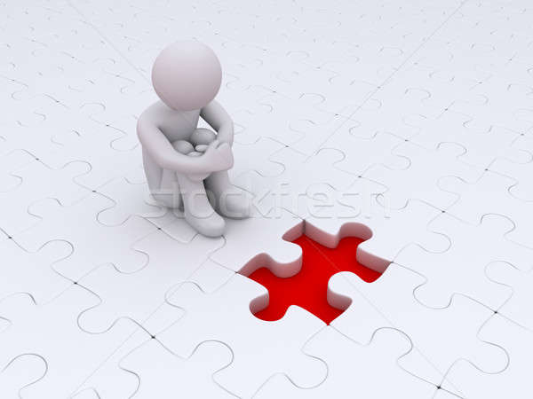
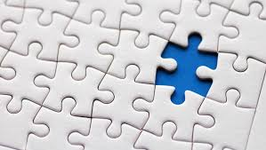

?- 'İNSAN' nı tanımlasaydın bunu nasıl yapardın
Çok fazla insanla karşılaşıyoruz ve tanışıyoruz . İnsan tek başına yani birey olarak hem çok kıymetli ,önemli hemde bir hiç(kendini dünyanın hakimi sanarken) bu iki durum nasıl olur , övgü mü yergi mi buişte bu iki yapıyıda bir arada taşıyan birşey olmalıydı ...
Bu bir sorumu hayır ama üzerine düşünülmesi gereken bir konu bence ."Her insan yapbozun bir parçasıdır. "
İNSAN
==
YAPBOZ
Eminim bu cümleyle bir çoğunuz ne dediğimi anlamıştır ama yine de gelin bunu açıklayalım.
"BÜTÜN ANCAK SENİNLE OLUŞUR"

1 insan o kadar kıymetli okadar 'önemli' ki o olmadan o yapboz asla tamamlanamayacak .
<
1000 parçadan oluşuyorsa tablonuz 999 parçası olsada yeterli olmaz '1' siz olmaz tamamlanamaz.
Bu sözüm öz güvenini kaybetmiş ,kendi değerini farkedemeyen güzel insanlara bir not olsun.Ötekileştirselerde , önemsizleştirselerde unutma sen olmassan o tablo asla tamamlanmayacak bütünlük oluşmayacak . Çok kıymetlisin çokk :)

"SEN ANCAK BİRLEŞİRSEN BİR OLURSAN ANLAM KAZANIRSIN"
Egosuyla ,kibriyle , kırıp dökmekte ,hor görmekte sınır tanımayan insan sen yapbozun sadece bir parçasısın al bak bir anlamıyla varmı tek bir parçayla, neye benziyor anlaya biliyormusun hayır anlayamasın. Parçaya bakarak bütünü göremessin. Bu sözüm ,sürekli yukarıdan bakan , kendine bakmayı akıl edemeyecek kadar kör olana not olsun
Her bir parçası insan olan o muazzam tablo birgün tamamlanacak . Ve biticek her şey ve o tabloda hangi parça olucağımıza biz karar veriyoruz. Doğduk-büyüdük-evrildik-değiştik vs. Sonra bütün bu süreçte aslında tablodaki yerimizi seçiyoruz(İRADE) .
Çok kişi tablodaki yerini aldı . Ve daha hali hazırda 8 milyara yakın parça var ve olucakta :) Bu tablo ne zaman tamamlanacak bilmiyorum. Bilende yok ama benim merakım ne zaman tamamlanıcağı değil. O gün geldiğinde ben o tablonun neresinde olucam ve ortaya nasıl bir tablo(bütün) çıkacak...[Bu bizim yani tablonun her ferdinin elinde]
Biz birsek varız kimse sadece kötü değil bunu gördüm. Farketmeden ,bilmeden ya da bilerek o kadar bir birimizin hayatındayız ki o kadar çok etkiliyoruz ki bazen bir söz çok şeyi değiştiriyor. Sen söylüyorsun karşındaki kırılıyor,öfkeleniyor ve başkasını kırıyor, üzüyor . Sen söylüyosun karşındaki yumuşuyor , gülümsüyor ve başkasını gülümsetiyor . Hatta bazen kararların alınmasına ,değişimine sebep oluyoruz. Bir söz vardı "Biz dünyaya kalmaya gelmedik dünyadan geçiyoruz" ne hoş ne anlamlı ... Ne bıraktığımıza ne yaptığımıza bakalım işe kendimizden başlamalıyız bunu herkes yaparsa zaten çok şey değişir.Tabi her parça aynı değil olmasında zaten biz renklerimizle güzeliz :) . Yani hadi kendin tamamda milletin tablodaki yerine niye karışıyorsun:)) .